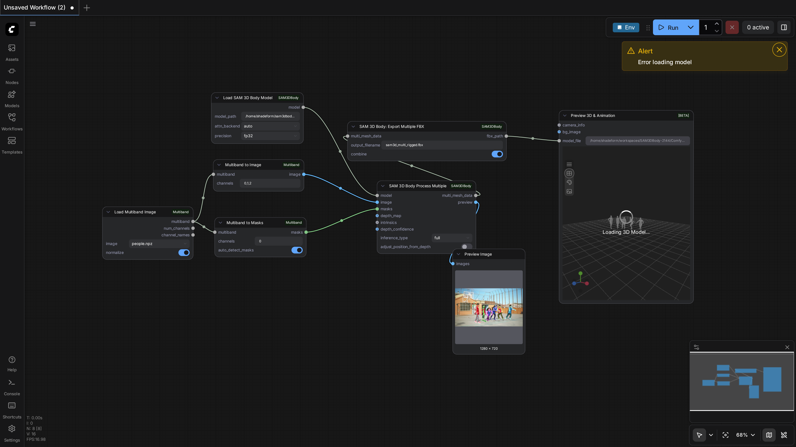
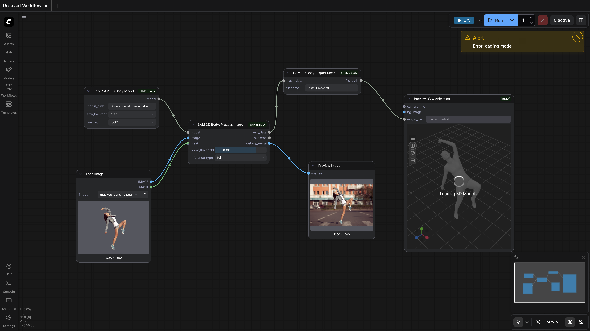

100.0%
4 passed
4/4 tests
Workflows

multiple_masks
pass

multiple_masks_depthcorrected
pass

rigging
pass

workflow
pass
Downloaded Models
3 files · 5.1 GBmodels/depthanything3/
da3_giant.safetensors5.1 GB
.cache/huggingface/download/model.safetensors.metadata124.0 B
.cache/huggingface/.gitignore1.0 B